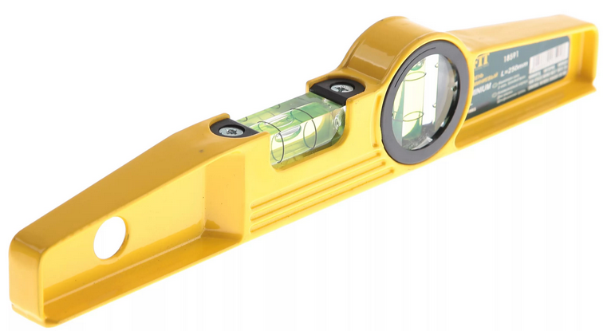

Самое первое: в магазинах практически невозможно найти правильно настроенного уровня. Невозможно купить уровень и начать им пользоваться по двум причинам:
В этой статье дается "полный курс" по методике выбора и настройки уровня. Следуйте этим советам, и вы получите хороший инструмент, в точности которого вы будете абсолютно уверены.
Как проверить уровень в магазине?
В момент покупки уровень нужно уметь проверять, чтобы отбраковать явно кривые экземпляры.
Как проверить уровень в магазине? Очень просто. Положите уровень на любую, кажущуюся вам горизонтальную поверхность. Запомните положение пузырька относительно двух рисок. Поверните уровень на 180 градусов по горизонтали (для одарённых: правый конец станет слева, левый конец станет справа) и положите его на то же место. Пузырек должен оказаться в точно таком же положении. В абсолютно точно таком же положении!
Если пузырек не находится в одном и том же положении, а вам говорят, что все в пределах погрешности - не верьте. Уровень должен быть абсолютно точным. И такие уровни есть. И стоят они столько же сколько и кривые.
Выбор уровня
Тут правило очень простое: не покупайте нерегулируемый уровень. Утверждение, что производители делают уровни по каким-то нормам, и выставляют уровни на заводе - в корне неверное. Найти правильно выставленный нерегулируемый уровень невозможно, это аксиома. Даже если вы в магазине проверите уровень и он покажется вам правильно выставленным, каково будет ваше разочарование, когда дома в спокойной обстановке вы увидите, что на самом деле он выставлен не точно.
Нерегулируемый уровень - это уровень, в котором отсутствуют винты регулировки колбы с пузырьком. Такие уровни бывают как аллюминиевыми, так и пластмассовыми, из профиля или литые. Общее свойство у них одно - ими невозможно пользоваться.
Если же по бокам колбы с пузырьком есть наружные винты, то эти винты не просто закрепляют колбу, а служат для регулировки. Это регулируемый уровень. Такой уровень можно покупать. Но и тут есть некоторые нюансы.
Колбы. Колбы бывают двух видов: в виде трубки, в которой налита жидкость, и в виде литого параллелепипеда, в котором выточено цилиндрическое пространство для жидкости. Предпочтительнее брать второй вариант, так как трубки с жидкостью могут быть немного изогнутыми. Но это не особенно принципиально. Если вы видите, что визуально, с разных сторон, трубка ровная и не изогнутая, то такой уровень можно брать. В хороших уровнях под трубку подкладывают светящуюся полоску, которая помогает делать замеры в плохо освещенных местах.
Винты. Регулировочных винтов обычно два, по одному с каждой стороны колбы. Бывают с маленькими головками, и даже не выглядят как настроечные, а бывают с широкими плоскими головками. Лучше брать с широкими головками - такие винты имеют более плавный ход. Но это тоже не принципиально. Я себе купил уровень с маленькими подстроечными винтами. Один раз настроил, и надолго забыл.
Вот как выглядит идеальный уровень - литая колба с выточенным цилиндрическим пространством, этот уровень регулируемый, а регулировочные винты с широкими головками:

Как настроить уровень?
Предполагается, что вы купили настраиваемый уровень (ведь вы уже знаете, что ненастраиваемый уровень покупать нельзя). Как его настроить? Есть очень простая методика настройки уровня, причем точность достигнется в пределах толщины листа газетной бумаги.
Итак, вот описание процесса настройки:
Настройку удобнее всего производить за столом, который стоит прочно и не шатается. Рабочее место должно быть хорошо освещено.
Понятно, что отрегулировать уровень не составляет проблемы, если у вас имеется строго горизонтальная поверхность. Но здесь возникает порочный круг: для настройки строительного уровня нужна горизонтальная поверхность, а для поиска горизонтальной поверхности нужен настроенный уровень. Однако, есть возможность получить горизонтальную поверхность с помощью ненастроенного уровня.
Нарежем стопку небольших кусочков бумаги, например, газеты. Положим на стол наш ненастроенный уровень. Подложим под один конец уровня несколько кусочков бумаги так, чтобы он показал горизонтальность (пузырек был строго по центру между рисок). Это первый этап настройки.
Далее перевернем уровень горизонтально на 180 градусов (опять же, для особо одаренных - так, чтобы его правый конец теперь был слева, а левый - справа). Если уровень исправен, то он продолжит показывать горизонтальность, так как исправный уровень показывает горизонт, а горизонт один, что справа налево, что слева направо. Если уровень ещё нуждается в регулировке, то в результате переворачивания пузырек воздуха в колбе сместится, т. е. уровень будет показывать, что он опять лежит не горизонтально.
Подложим еще несколько кусочков бумаги под один из концов уровня так, чтобы он опять стал показывать горизонтальность. Возможно, придется подкладывать бумагу под тот же конец, что и прошлый раз, возможно, под другой - без разницы. При этом считаем каждый подложенный кусочек. После того, как уровень снова покажет горизонталь, уберем ровно половину подложенных на втором этапе кусочков бумаги. Если их было нечетное число, то округляем. Поздравляю, мы получили истинный горизонт.
Теперь, в таком положении поворачиваем настроечными винтами колбу так, чтобы она показывала горизонтальность. После такой настройки, если снова повернуть уровень на 180 градусов, пузырек снова окажется по центру. Настройка успешно завершена.
Регулировка колбы для замера вертикальных поверхностей производится совершенно аналогично. Но для ее выполнения нужен помощник, так как она выполняется на приблизительно вертикальной стене. А на такой стене кусочки бумаги и уровень сами по себе держаться не будут. Помощник должен будет их придерживать. Но можно воспользоваться липкими стикерами, тогда настройку можно произвести и в одиночку.
Теперь, вооружившись этими знаниями, вы можете спокойно купить и настроить строительный уровень. И будете уверены в том, что этот прибор показывает вам правильные значения.
|
Знаете ли вы, что: Оказывать комплекс услуг по возведению и обслуживанию деревянных домов, беседок, бассейнов, заборов, гаражей, бань и саун способны только высококлассные специалисты. В Москве... читать далее. |